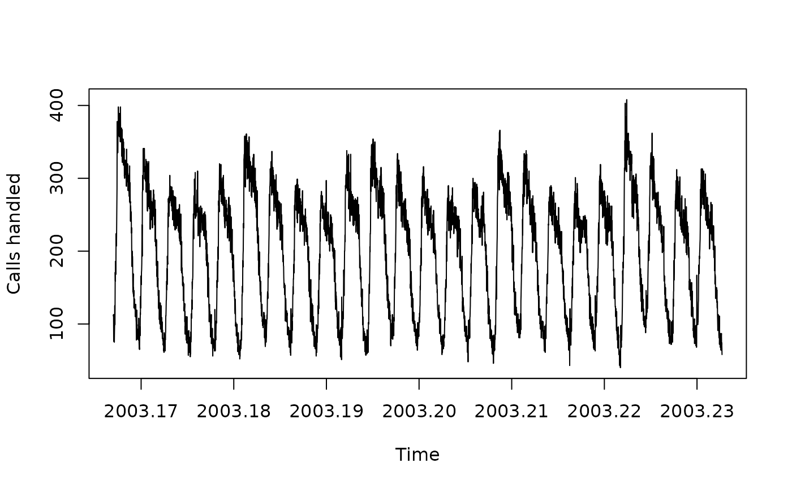

Number of call arrivals per 5-minute interval handled on weekdays between 7:00 am and 9:05 pm from March 3, 2003 in a large North American commercial bank.
References
Forecasting time series with complex seasonal patterns using exponential smoothing A.M. De Livera, R.J. Hyndman & R.D. Snyder J American Statistical Association, 106(496), 1513-1527. https://robjhyndman.com/publications/complex-seasonality/
Examples
plot(calls, ylab = "Calls handled")
